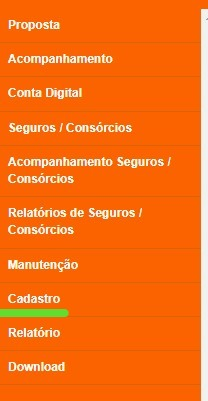
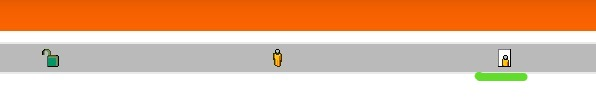
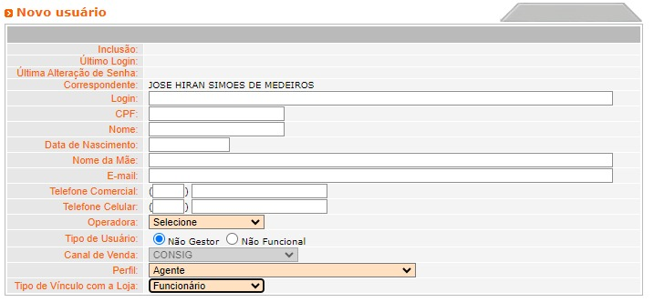
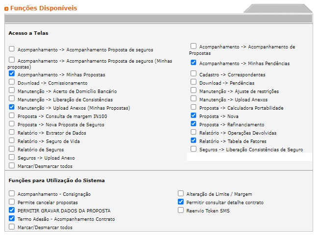

PASSO A PASSO PARA CRIAÇÃO DE USUÁRIO BMG
Passo 1: Acesse o portal pelo link: https://www.bmgconsig.com.br/Index.do?method=prepare ou clicando aqui.
Passo 2: No menu lateral clique em CADASTRO.
Passo 3: Clique no terceiro ícone mostrado na imagem abaixo.
Passo 4: Preencha os campos com os dados solicitados.
Passo 4: Se o funcionário for parceiro deixe apenas os campos mostrados abaixo marcados, se o funcionário for da Moeda de Ouro marque TODAS as opções.
